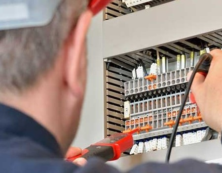

Programación
Contamos con 26 años de densa experiencia en la programación de PLC Siemens, utilizando el software Simatic, y Tia Portal para programación de autómatas.
Analizamos, gestionamos y modelizamos las señales eléctricas procedentes de los sensores de los medidores y de todas las magnitudes fisicas de campo del proceso indutrial, para integrarlas posteriormente dentro de la arquitectura de los autómata Siemens S7-1200 ó S7- 1500. Programamos el software de supervisión, control y adquisición de datos (SCADA), de los PLC Siemens, haciendo uso de Win CC, y de Tia Portal.
Nuestros métodos para identificar las oportunidades de mejora más importantes en la programación de PLC, HMI y SCADA de Siemens por adquirir siempre una profunda comprensión de la naturaleza de los procesos y de la dinámica necesaria en las cadenas cinemáticas de las máquinas, a través de nuestras visitas tecnicas a la fábricas, y de nuestro contacto muy directo con nuestros clientes.

Puesta en servicio
La puesta en marcha es el proceso de arranque, regulación y equilibrado de los equipos y sistemas de forma planificada, y el momento de verificar que se las fases anteriores de diseño y
montaje se han ejecutado correctamente. Su duración suele estar relacionada con la complejidad del proceso y con el tiempo que se haya dedicado a realizar una buena planificación. Es sin lugar
a dudas, el proceso crítico que determina la diferencia entre el éxito y el fracaso de todo el proyecto.
Al igual que en la Puesta en Marcha de proyectos de Automatización, la dirección técnica de la puesta en marcha tiene típicamente las siguientes fases de actuaciones:
Implementación secuencial de las fases del proceso. En caso de procesos complejos se simultanearán tantas fases como sea posible.
Pruebas preliminares
Revisión de la documentación de soporte del sistema
Asistencia al control de calidad
Pruebas finales y revisión de la documentación de soporte del sistema
Entrega de la instalación
Entrega de la documentación del sistema
Soporte
Para mejorar la conectividad, productividad, seguridad, eficiencia y sostenibilidad ambientales en las industrias tales como: Petróleo (oíl and gas), Energía, Alimentos, Minería, Papelero, Química, Hidroeléctrica, Automotriz, Gobierno.
Calibración de equipos
Instalación y programación de equipos
Reparación y configuración de sistemas de contrul
Contrul para la sostenibilidad ambiental
Servicio técnico de instrumentación industrial.
Mantenimiento de bombas dosificadoras de químicos.
Diagnóstico de equipos de medición y contrul